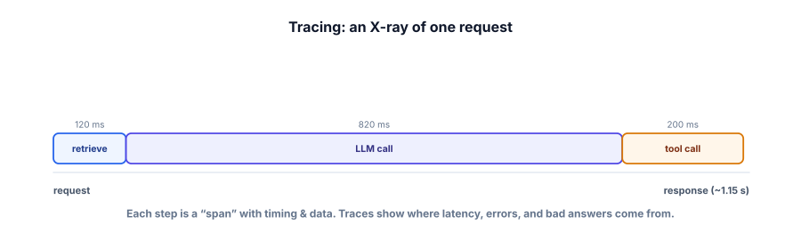

Tracing & observability
When a RAG pipeline or agent gives a bad answer in production, “the model messed up” isn’t a diagnosis. Tracing gives you an X-ray of every request — what was retrieved, what prompt was sent, what each step cost — so you can actually find and fix the problem.
Why LLM systems are hard to debug without tracing
An LLM feature is rarely one call. It’s a chain: retrieve, build a prompt, call the model, maybe call a tool, post-process. It’s also non-deterministic and depends on inputs you don’t see (the retrieved chunks, the exact assembled prompt). So when something goes wrong, the final answer alone tells you almost nothing. Observability — and specifically tracing — fixes this by recording each step of each request, so you can replay exactly what happened and see where it broke.

Observability is the ability to understand what your system is doing from the data it emits. A trace is the full record of one request; a span is one step within it (a retrieval, an LLM call, a tool call) with its inputs, outputs, timing, and cost. Monitoring aggregates these into dashboards and alerts (latency spiking, error rate up, cost climbing) so you learn about problems before users complain.
A trace is like the tracking page for a parcel. It does not just say 'delivered late'; it shows every stop: picked up, sorted at the hub, stuck at customs for two days, out for delivery. When something goes wrong you can see exactly which stop caused it. Where it breaks: a parcel tracker logs only times and places, but an LLM trace has to store the actual content at each stop (the prompt, the retrieved text), and that content can include private data you must protect.
What to capture per request
- Inputs & outputs of each step — the query, the retrieved chunks, the exact prompt sent, the model’s raw response. This is what lets you reproduce a failure.
- Timing per span — to find latency bottlenecks (Track 8).
- Tokens & cost per call — to catch runaway spend.
- Errors & retries — what failed and how it was handled.
- Metadata — request id, user/session, model and prompt version — to slice and compare.
You can start with plain logging before adopting a tool. Capture each span with timing and data.
import time, json
def traced_rag(query, request_id):
trace = {"id": request_id, "query": query, "spans": []}
def span(name, fn):
t0 = time.time()
result = fn()
trace["spans"].append({"name": name, "ms": round((time.time() - t0) * 1000),
"output_preview": str(result)[:120]})
return result
chunks = span("retrieve", lambda: retrieve(query)) # what did we fetch?
prompt = span("build_prompt", lambda: build_prompt(query, chunks))
answer = span("llm", lambda: call_model(prompt)) # exact prompt + answer
log(json.dumps(trace)) # now every request is replayable & measurable
return answer
# Free, open-source tracing tools (Langfuse, Phoenix) do this with nicer UIs + dashboards.With this, a bad answer is debuggable: open the trace, see that retrieve returned the wrong chunk (a retrieval bug, Track 3) versus a good chunk the model ignored (a grounding bug). Free tools like Langfuse or Arize Phoenix add dashboards, but the idea is exactly this.
Assumptions: a RAG assistant serves 1 million requests a day. Each request has 6 spans: input guard, embed, retrieve, rerank, LLM call, output guard. Five small spans average 2 KB each; the LLM span stores the full assembled prompt and answer, about 12 KB.
- Per-request size. 5 x 2 KB + 12 KB = 22 KB.
- Keep everything. 1,000,000 x 22 KB = 22 GB a day. With 30-day retention that is about 660 GB, most of it prompts nobody will ever open.
- Tail-based sampling. Decide what to keep after the request finishes: 100% of errors, guardrail blocks and thumbs-down (assume 3%, so 30,000), plus 5% of the remaining 970,000 (48,500). Kept: 78,500 x 22 KB = about 1.7 GB a day, or about 52 GB over 30 days.
- Metrics stay complete. Latency, tokens, cost and error counts are recorded for 100% of requests as small numeric counters, so dashboards and alerts are not affected by sampling.
- Redact before writing. Run PII masking on prompt and answer text before the span is exported, so the trace store never holds raw card numbers or emails.
- Debug a complaint. A user reports a wrong answer. Their request was a thumbs-down, so it was kept. Open the trace: the retrieve span returned last year's policy (doc version 3, not 4). That is an indexing bug, not a model bug, and the fix is a re-index plus a new golden case.
For shared field names, the OpenTelemetry GenAI semantic conventions now live in their own repository (open-telemetry/semantic-conventions-genai).
- LLM features are multi-step and non-deterministic — the final answer alone can’t be debugged.
- A trace records one request as timed spans (retrieve, prompt, LLM, tool) with inputs/outputs/cost.
- Capture the exact prompt and retrieved context — that’s what makes failures reproducible.
- Monitor & alert on latency, cost, and error rates to catch problems before users do.
- Start with plain logging; free tools (Langfuse, Phoenix) add dashboards later.
A user reports your RAG bot gave a wrong answer. You have full tracing. What’s the fastest path to a diagnosis?
A bad answer reaches a user at 3am. What lets you debug exactly what happened?
Traces are too expensive to keep in full, so you sample. Which policy keeps the most useful debugging data?
1. List the spans you’d capture for a tool-using agent request, and one piece of data to log for each.
2. Why is logging the exact assembled prompt (not just the user query) essential for debugging?
3. Logging full inputs/outputs can capture sensitive user data. What’s the tension, and how do you handle it?
▸ Show solutions & reasoning
1. For an agent: plan/think (the model’s reasoning), each tool call (name + arguments), each tool result (output, truncated), and the final answer; plus per-step timing and tokens. Logging the tool arguments and results is what lets you see why a step failed or looped (Track 4’s “read the trace”).
2. Because the model only ever acts on the assembled prompt, not your mental model of it. Bugs hide in assembly — a missing system message, the wrong retrieved chunks, a template error, truncation. If you only log the user query, you can’t see what the model actually received, so you can’t explain its output. The exact prompt is the ground truth of what happened.
3. The tension: detailed logs are gold for debugging but may contain PII (names, emails, account data) — a privacy and compliance risk (Track 7). Handle it by redacting/masking sensitive fields before logging, restricting access to logs, setting retention limits, and sampling rather than storing everything forever. You want enough to debug without turning your logs into a liability. Observability and privacy must be designed together.
Tracing isn’t just for firefighting — it’s the data source that powers everything else in this track. Your production traces are your richest supply of golden-set candidates: real queries, with the exact context and the actual (sometimes wrong) answers. Mining traces for failures, then promoting those into your golden set (Lesson 6.2), is how your offline evals stay representative. Traces also let you run online evals at scale — sample production traces and run an LLM-as-judge over them to track quality trends without waiting for user feedback. And they’re how you debug agents, tune latency (Track 8), and audit safety incidents (Track 7).
So the mature setup is a loop: instrument everything → monitor dashboards and alerts → when quality dips or a user complains, open the trace and diagnose the exact span → fix it and add the case to the golden set → the offline eval now guards against it. Free, open-source tools (Langfuse, Arize Phoenix, and OpenTelemetry-based stacks) give you this with searchable traces, latency/cost dashboards, and judge integrations — but you can begin today with structured logging, which is better than the most beautiful dashboard you never built. The principle: you cannot improve, debug, or trust a system you cannot see. Observability is what makes an LLM product operable rather than mysterious.
labs/08_llmops.pyFree and offline once set up: Ollama with qwen2.5:7b, plus the packages in labs/README.md. From the course folder:
python labs/08_llmops.pyWhat to look for: Open the JSONL file of spans the lab writes. Each line has a trace ID, span name, start and end time, token counts and cost. Find the slowest span in a request and compare the semantic-cache hit and miss cases: the hit should show no LLM span and a much shorter total duration.
▸ Recorded output (our run, 2026-11-03, qwen2.5:7b on a laptop GPU)
semantic similarity to the cached 'track my order': paraphrase=0.657 different intent (cancel)=0.523
semantic hits at threshold 0.9: 0
Look: a threshold low enough to catch the paraphrase would sit close to the wrong-intent score.
Serving 'how to track' to someone who asked 'how to cancel' is worse than a cache miss. Tune the
threshold on labelled pairs, scope caches per intent/tenant, and log every semantic hit for review.
traces written to traces.jsonl; first span:
{"trace_id": "54d669838c1f47758c9099aba0110b3f", "name": "chat qwen2.5:7b", "gen_ai.operation.name": "chat", "gen_ai.provider.name": "ollama", "gen_ai.request.model": "qwen2.5:7b", "gen_ai.prompt.name": "support_answer", "gen_ai.prompt.version": 2, "prompt.hash": "5ab3d11ffb3b", "user.id": "u-123",
4) Prompt version rollout: v1 vs v2 on the same question, both traced
v1 hash=47ed77f326d6 -> "Yes, you can return innerwear as long as it meets your retailer's return policy conditions, such as being unus"
v2 hash=5ab3d11ffb3b -> 'Please contact support for specific return policies on innerwear.'
Check the facts too: store policy (labs/data/kb.json, ret-01) says innerwear cannot be returned. Neither
prompt has retrieval, so any 'yes' is a hallucination; the version that defers to support is the safer one.
Look: the trace links every answer to an exact prompt hash and model, so a bad answer is debuggable,
and a rollout is a registry change you can roll back, not a code edit buried in a deploy.Your numbers will differ a little run to run. Full log: labs/outputs. Source: labs/08_llmops.py.
Warm-up. A request has spans: retrieve 180 ms, rerank 90 ms, LLM 2,400 ms (time to first token 600 ms), output guard 40 ms. Total is 2,710 ms. Where would you look first to cut perceived latency, and why?
▸ Solution
The LLM span is 2,400 / 2,710 = 89% of the total, so it dominates. If the UI streams, perceived wait is roughly retrieve + rerank + time to first token = 180 + 90 + 600 = 870 ms, so streaming already hides most generation time. Next levers: a shorter prompt (fewer retrieved chunks) to cut time to first token, or a smaller model for this route. Note the output guard needs the full answer, so with streaming you must guard chunk by chunk or accept a delay.
Transfer. Your agent sometimes loops calling the same search tool. What fields must the trace capture to diagnose it, and what alert would you add?
▸ Solution
Per tool span: tool name, arguments (redacted), a hash of the arguments, the result size and a short preview, error status, and the step number within the run. Per run: total steps, total tokens, and stop reason. With argument hashes you can see the same call repeating with identical inputs. Alert: the share of runs that hit the step budget, or contain three or more identical tool calls, rising above a baseline (say 1% of runs over an hour). Each alerting run's trace ID goes into a triage queue.
Stretch. Design how traces feed your eval system without leaking customer data.
▸ Solution
1) Redact PII in-process before export, using a regex plus model-based detector, and store only redacted text in the trace store. 2) Tag traces with outcome signals such as thumbs-down, escalation and guardrail block. 3) A daily job samples tagged traces and runs an LLM judge for faithfulness; low scores go to a review queue. 4) A reviewer turns real failures into golden-set cases, rewriting any remaining identifying details, and links the case to the trace ID for provenance. 5) Access to raw traces is role-limited with 30-day retention, while golden cases, which are already anonymised, live in git. This gives a steady stream of real failures into evals with a clear privacy boundary.
Junior What is the difference between a trace and a span?
▸ Model answer
A trace is the full record of one request through the system. A span is one step inside it, such as a retrieval, an LLM call or a tool call, with its start and end time, inputs, outputs, token counts and status. Spans nest under a trace through a shared trace ID and parent IDs, so you can see the order and timing of every step. When an answer is wrong, the trace lets you check each step in turn: did retrieval fetch the right document, what exact prompt did the model see, and what did it return.
Mid Which metrics would you put on the dashboard for a production RAG service, and which would you alert on?
▸ Model answer
Dashboard: request rate, p50 and p95 end-to-end latency, time to first token, tokens in and out per request, cost per request and per day, error and timeout rate per span, retrieval empty-result rate, refusal or 'I don't know' rate, guardrail block rate, cache hit rate, and online judge scores on a sample. Alerts: p95 latency over budget, error rate spikes, cost per hour over a threshold, and sudden shifts in refusal or empty-retrieval rate, because those often mean an index or upstream failure. All of them sliced by model version and prompt version.
Senior How would you instrument an LLM platform shared by 15 teams so traces are useful and affordable?
▸ Model answer
Provide one SDK wrapper that emits spans in a shared schema, aligned with the OpenTelemetry GenAI conventions, so any backend can read them. Make redaction and tail-based sampling defaults inside the wrapper rather than per team. Attach model ID, prompt version hash, team and feature to every span for cost attribution. Keep full numeric metrics for 100% of traffic and full content for failures plus a small sample. Enforce retention by data class. Then build shared views: cost per team, top failing spans, and a one-click 'add to golden set' from a trace. The goal is that every team gets debugging and cost visibility without building it.
With observability in place, you can make your evals automatic — a gate that runs on every change, like tests for code. Next: regression-testing prompts.